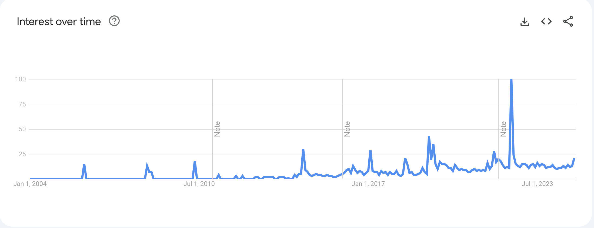

Japanese Slang: 無敵の人
Sat 28 December 2024無敵の人 romanizes to muteki no hito and translates to "Invincible Man". A common translation of 敵 is "enemy" and 無_ often means without _. On first reading, I translated the phrase literally to "a person without enemies" 1. But the phrase carries a negative connotation of a person unafraid of consequences. On June 8 2008, 加藤 智大 (Kato Tomohiro) drove a rented truck into an Akihabara shopping center hitting five people. He exited the truck and stabbed 12 others, altogether resulting in seven dead and ten injured. Tomohiro was given the death penalty2.
The Akihabara Massacre led to 西村 博之 (Nishimura Hiroyuki) coining the phrase. The slang originates from his June 2008 blog post titled 無敵の人の増加 (The Rise in Invincible Men)3. Hiroyuki's first line gets to the heart of the slang.
元々、無職で社会的信用が皆無の人にとっては逮捕というのは、なんのリスクにもならないのですね。
A person without a job or social reputation does not risk losing anything when arrested.
Other incidents have been done by "Invincible Men"4, but the slang reached peak relevance when Japan executed Tomohiro on July 2022 according to Google search rates5.

-
Because of my direct translation I related it to Vinland Saga's "I have no enemies". The character says the phrase オレに敵なんかいない (ore ni teki nanka inai) instead. Funnily enough the anime was picked up by english tiktok creators to represent a certain mindset. ↩
-
https://en.wikipedia.org/wiki/2008_Akihabara_massacre ↩
-
The blog is a short read if you can read Japanese. Hiroyuki proposes a method for reducing the amount of "invincible men". ↩
-
Other events wikipedia writers categorized as incidents by Invincible Men. ↩
-
A word's relevance can be measured by usage rate data called n-gram instead of search rates. The largest corpus of data I know for this is google's n-gram viewer which does not support Japanese. There is a paid version, but I didn't want to spend $100+ for this post. ↩